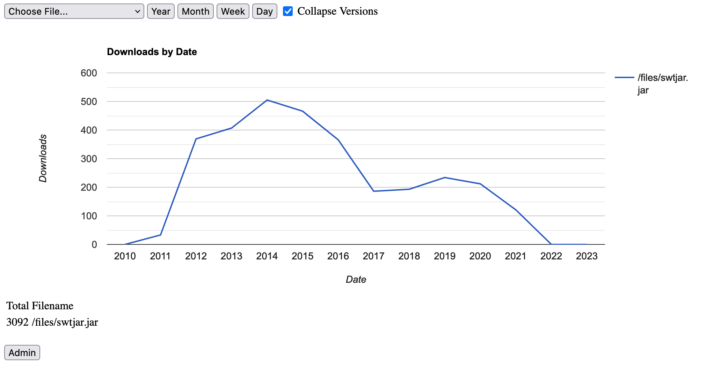
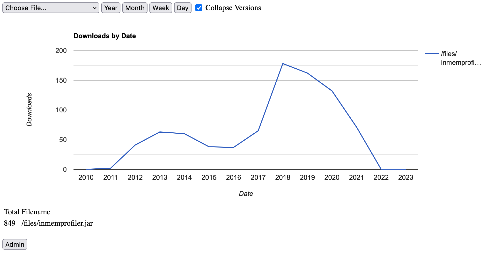
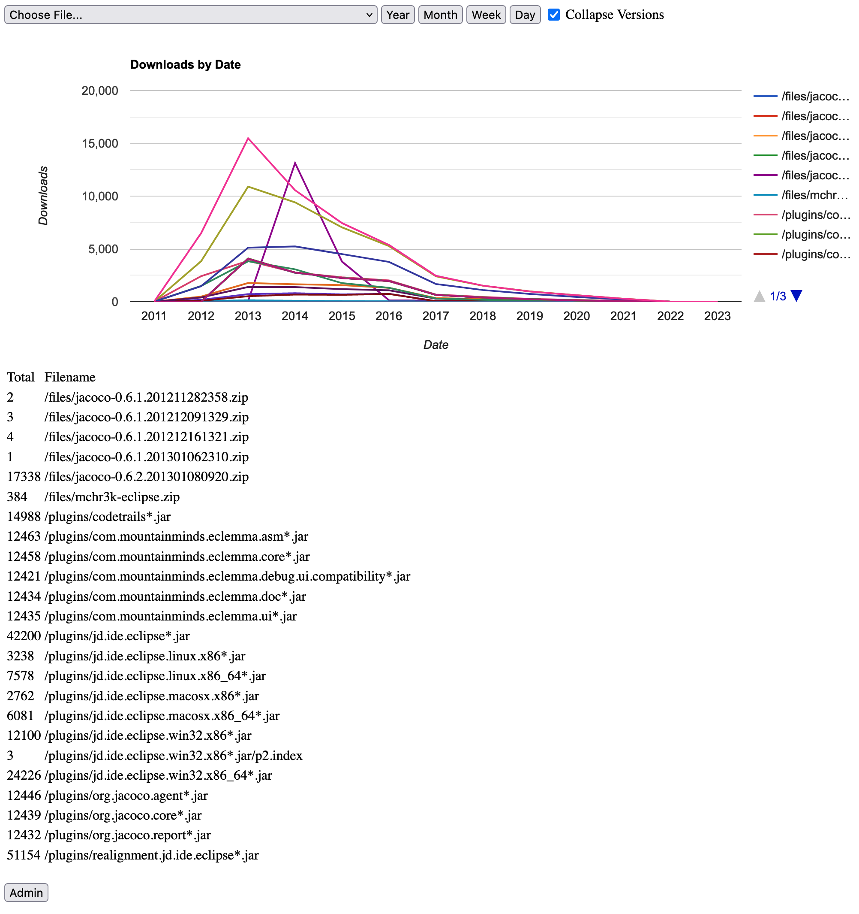

This site is currently focused on a collection of open source projects which I worked on in the period 2010 - 2014. I don't actively support these any more.
You can find me on LinkedIn here.
I distributed binaries for these open source projects from two Google App Engine hosted file serving sites which I launched in 2010/2011. Sometime in 2021/2022 these sites got taken down by changes to Google's billing model for Google App Engine. It used to be possible to host sites on Google App Engine and trivially limit costs so that a site would be taken offline when it exceeded the daily free quota. Unfortunately this is no longer possible and keeping these sites online would require added complexity to limit the potential costs. I therefore officially took these two sites offline in May 2023. All the files which were being hosted there are still available directly from Github:
I collected download stats during the ~10 year period that I ran these download sites:
intracesite.appspot.com: Summary
intracesite.appspot.com: jtda

intracesite.appspot.com: intraceui

intracesite.appspot.com: swtjar

intracesite.appspot.com: manchester

intracesite.appspot.com: inmemprofiler

mchr3k-eclipse.appspot.com: Summary

mchr3k-eclipse.appspot.com: jdrealign

mchr3k-eclipse.appspot.com: jacoco

mchr3k-eclipse.appspot.com: eclemma

mchr3k-eclipse.appspot.com: codetrails

InTrace is a tool which enables the tracing of program execution without recompilation. You can easily trace your own classes, library classes or system classes. This tool can be used by adding a single extra JVM parameter to a new JVM process (see below) or by using the Eclipse plugin.
InMemProfiler is a tool for tracking the allocation and lifetime of Java objects. This tool aims to answer the following questions.
Java Thread Dump Analyser is a tool for quickly summarising lengthy Java thread dumps.
Java Live Thread Analyser is a tool for identifying the source of Java thread allocations.
SWTJar is a tool for easily packaging SWT Java applications into a single cross platform Jar.
EmmaCheck is an ant task which enforces particular Java code coverage levels.
JDEclipse-Realign is a fork of a project which enhances JD Eclipse to align the generated source code with the correct debug line numbers.
Code Trails are collections of simple markers within code comments that highlight particular functionality and themes. The Code Trails plugin enables this functionality within Eclipse.
JaCoCo is a fork of the JaCoCo code coverage library to enable me to work on adding filters that improve coverage reports.
Arduino Manchester Encoding is a library for use in RF links.